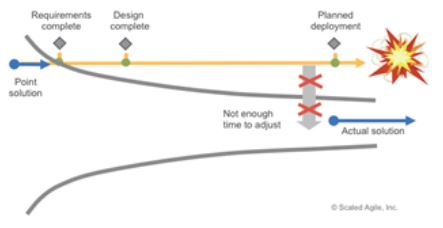

Dominica DeGrandis[15] identifies 5 “time thieves” that impede delivery.
These are:
- Too much work in progress
- Conflicting priorities
- Unknown dependencies
- Unplanned work
- Neglected Work
These all generate waste in terms of unused work or waiting time. She argues that by making the work visible, by using the boards described in Planning and execution the the teams are able to significantly improve their delivery.
Additionally a lack of understanding of the end users' fundamental ‘wants’ that can generate unnecessary requirements and hence code that does not get used.
This is one of the primary issues that resulted in the meeting of minds of thought leaders and the agile manifesto and principles[16].
The principles also identifed the need for adaptation during the delivery of the project.
This is important as the requirements frequently evolve due to feedback and learning, hence the adaptation maximises the value of the final outcome. Traditional methods frequently require extraordinary action as illustrated in figure 4.
The output also signposted factors such as:
A lack of autonomy
- This allows the team to tune their way of working in response to changes in their environment or new learning. This is important as the teams have the situational awareness that may be absent with the authors of the original processes.
The need for adaptation during the delivery of the project.
- This is important as the requirements frequently evolve due to feedback and learning, hence the adaptation maximises the value of the final outcome.
Team motivation and the avoidance of burnout
- This is achieved through sustainable development and was also identified in order to protect the developers, sponsors and users. This includes consciously “maximizing the amount of work not done” [16]
Mutual respect and trust is also essential for effective collaboration.
- This is supported by encouraging face to face conversation is to develop a shared understanding. Projects can also fail due to poor quality. It is essential to preserve ensuring technical excellence and good design in spite of the constrained timescales.

References
[15] DeGrandis, D 2017. Making Work Visible: Exposing Time Theft to Optimize Work & Flow
[16] https://agilemanifesto.org/